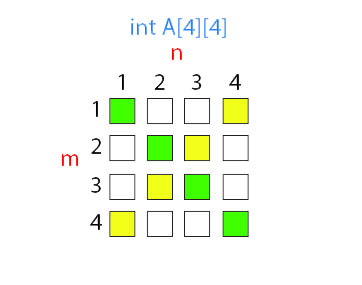

O matrice sau un tablou bidimensional, poate fi descris ca un "vector de vectori". De exemplu, o matrice poate fi imaginată ca un tabel format din elemente structurate pe linii și coloane, toate având același tip de date.

Declararea unei matrici cu 3 linii și 5 coloane, denumită matriceExemplu cu elemente de tip întreg:
int matriceExemplu [3][5];
Ca și în cazul vectorilor, liniile și coloanele matricii se numară încapând de la valoarea 0. Astfel, prima line, respectiv prima coloană a matricii este linia/coloana 0, a doua linie/coloana este 1, s.a.m.d.
Accesarea elementelor din matrice se face ca și în cazul vectorilor specificând numele matrici și intre paranteze pătrate indexul liniei urmat de indexul coloanei.
Parcurgerea și inițializarea unei matrici cu valori de la tastatură:
#include <iostream>
using namespace std;
int main()
{
int i, j, m, n, matrice[10][10];
cout<<"Introduceti numarul de linii: m=";
cin>>m;
cout<<"Introduceti numarul de coloane: n=";
cin>>n;
cout<<"Introduceti numerele:"<<endl;
for (i=0;i<m;i++)
for (j=0;j<n;j++){
cout<<"matrice["<<i<<"]["<<j<<"]=";
cin>>matrice[i][j];
}
}
Afișarea elementelor matrici de mai sus:
// parcurgerea matricii
for (i=0;i<m;i++) {
for (j=0;j<n;j++) {
// afisarea elementului
cout<<matrice[i][j]<<" ";
}
// trecerea pe o noua linie
cout<<endl;
}
Într-o matrice pătratică numarul de linii= numarul de coloane (n=m).
Într-o matrice pătratică avem:
Diagonala principală care este formată din elementele unei matrici pătratice aflate pe pozițiile în care indicele liniei este egal cu cel al coloanei (i=j), adica a[i][i].
Diagonala secundară care este formata din elementele unei matrici pătratice aflate pe pozițiile în care i+j=n+1, mai exact a[i][n-i+1].
În matricea de mai sus, pătratele colorate cu verde reprezintă diagonala principală și pătratele colorate cu galben reprezintă diagonala secundară.
Zonele determinate de diagonale:
Pe diagonala principală i=j
Sub diagonala principală: i>j
Deasupra diagonalei principale: i<j
Pe diagonala secundară j=n-i+1
Sub diagonala secundară: j>n-i+1
Deasupra diagonalei secundare:j<n-i+1